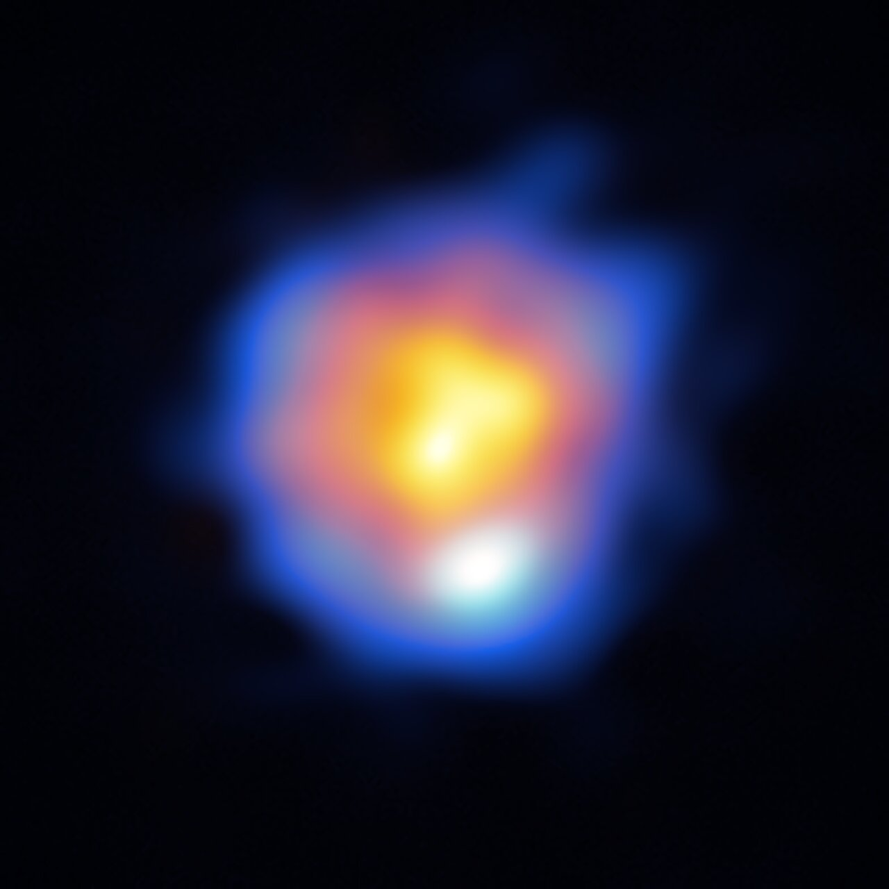

An N star (also written N-type star, or C-N in the modern revised spectral classification) is a cool, carbon-rich red giant whose atmosphere contains more carbon than oxygen, producing molecular bands of C₂, CN, and CH rather than the titanium oxide bands characteristic of ordinary M-type giants. N stars are not related to neutron stars; the designation refers to a class of carbon stars — the coolest and most deeply red members of that family — now understood to be asymptotic giant branch (AGB) stars in a late stage of stellar evolution.

ALMA (ESO/NAOJ/NRAO)/Y. Asaki et al.
The N class was introduced in the late 19th century as part of the Harvard spectral classification system, alongside the companion R class for hotter carbon-rich stars. Angelo Secchi had earlier grouped these intensely red, carbon-banded objects into his Secchi class IV in the 1860s. The Harvard R–N sequence spanned the temperature range corresponding roughly to spectral types G7 through M10. In 1993 the Morgan–Keenan (MK) system superseded the old R and N designations with a unified set of five C sub-types: C-N (the classical N stars), C-R, C-J, C-H, and C-Hd. The C-N sub-type retains the physical meaning of the original N class.
N stars have effective temperatures of 2,600–3,100 K and absolute visual magnitudes near −2.2, making them among the most luminous cool giants in the Galaxy. Their defining chemical signature is a carbon-to-oxygen (C/O) ratio exceeding 1: in most cool giants oxygen is more abundant, so surplus oxygen forms TiO and other metal oxides. When C/O exceeds unity, free carbon atoms survive and form C₂, CN, and CH molecules, which absorb blue and violet light through the C₂ Swan bands and other features. The result is one of the reddest stellar colour classes known. Enhanced absorption lines of s-process elements — barium, technetium, and zirconium — appear in C-N spectra as a further chemical hallmark; the presence of technetium, with a half-life of only a few million years, confirms that nucleosynthesis is actively occurring in the star. N stars concentrate toward the Galactic plane, consistent with thin-disc (Population I) membership.
The canonical example is R Leporis (Hind’s Crimson Star), discovered in 1845 by John Russell Hind, who described it as resembling “a drop of blood on a black field.” With an effective temperature of 2,290 K, a luminosity of 13,200 L⊙, and a radius of 710–910 R⊙, R Leporis is a Mira-type variable with a pulsation period of approximately 427 days and a magnitude range from +5.5 to +11.7. At a distance of roughly 1,490 light-years, it is also among the most studied AGB stars: ALMA observations in 2023 resolved the stellar disc and a surrounding ring of outflowing gas at 5 milli-arcsecond resolution, providing a direct view of the mass-loss process that characterises N stars in their final evolutionary stages.
See also: carbon stars, stellar evolution, asymptotic giant branch, variable stars, spectral classification.